<!-- TODO add slide numbers & maybe slide name --> ### Eliminating Accidental Deviations in Human Connectomics  Eric W. Bridgeford | [ericwb.me](http://ericwb.me) --- ### Outline - [Motivation](#defn) - [Quantifying Discriminability](#statistics) - [Real Data](#results) - [Discussion](#disc) --- name:defn ### Outline - Motivation - [Quantifying Discriminability](#statistics) - [Real Data](#results) - [Discussion](#disc) --- ### What is Reproducibility? - .ye[Reproducibility]: ability to replicate, or reproduce, a conclusion - serves as a "first-pass" check for scientific utility - currently in a "reproducibility crisis" --- ### How do we address the Reproducibility Crisis? - fix post hoc analyses (e.g., $p$-values)? - fix measurements (e.g., measurement reproducibility)? Proposal: design experiments to maximize .ye[inter-item discriminability], rather than simply checking reproducibility after conducting the experiment --- name:statistics ### Outline - [Motivation](#defn) - Quantifying Discriminability - [Real Data](#results) - [Discussion](#disc) --- ### What do we want of our data? If we measure a sample multiple times, then each measurement of that sample is closer to all the other measurements of that sample, as compared to any of the measurements of other samples.  Perfect discriminability --- ### What do we want of our data? Imperfect discriminability  --- ### What do we want of our statistic? Discriminability is the probability of a measurement from the same item being closer than a measurement from a different item.  <!-- --- --> <!-- ### Statistics for Quantifying Reproducibility --> <!-- - most approaches tend to focus on the concepts of between-individual and within-individual summaries --> <!-- -- --> <!-- - parametric approaches --> <!-- - reproducibility is achieved if most of the variability is between-individuals, rather than within-individuals --> <!-- - e.g. Intraclass Correlation Coefficient (.ye[ICC]) and Image Intraclass Correlation Coefficient (.ye[I2C2]) --> <!-- -- --> <!-- - non-parametric approaches - reproducibility is achieved if measurements from the same item are more similar to one another than measurements from different items - e.g. Fingerprinting (.ye[Finger.]) and DISCO (.ye[Kernel]) --> <!-- --- --> <!-- ### Limitations of Existing Reproducibility Statistics --> <!-- - Data: $N$ items in $d > 1$ dimensions measured $s \geq 2$ times each --> <!-- | Statistic | Chief Limitation | --> <!-- | :--- | :--- | --> <!-- | ICC | univariate --> <!-- | I2C2 | does not generalize outside Gaussian framework; estimation issues in high dimensions --> <!-- | Finger. | overly greedy: only look at most similar measurement to the reference measurement --> <!-- | DISCO | struggles when $s$ is small --> <!-- --- --> <!-- ### Discriminability Statistic: Data --> <!-- - $n$ individuals measured $s = 2$ times each, for $N = n\cdot s$ total measurements --> <!-- - generalizes to $s \geq 2$, but $s=2$ is simpler --> <!-- 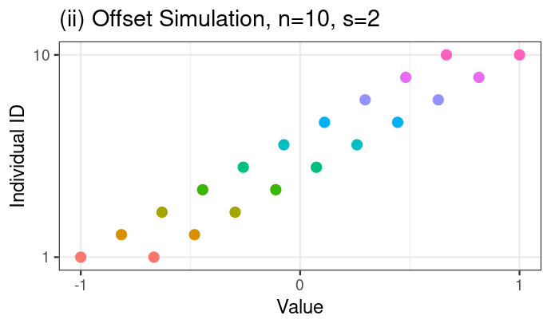 --> --- ### Discriminability Statistic: Step 1 - Compute $N \times N$ pairwise distance matrix between all measurements <!-- - measurements are indexed first by individual identifier, and second by "measurement session" -->   <!-- 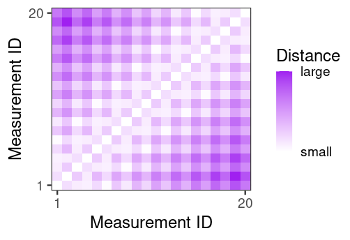 --> --- ### Discriminability Statistic: Step 2 - For each measurement, identify which measurements are from the same individual (<font color="green">green boxes</font>) - let $\color{green}g$ be the total number of <font color="green">green boxes = 20</font> 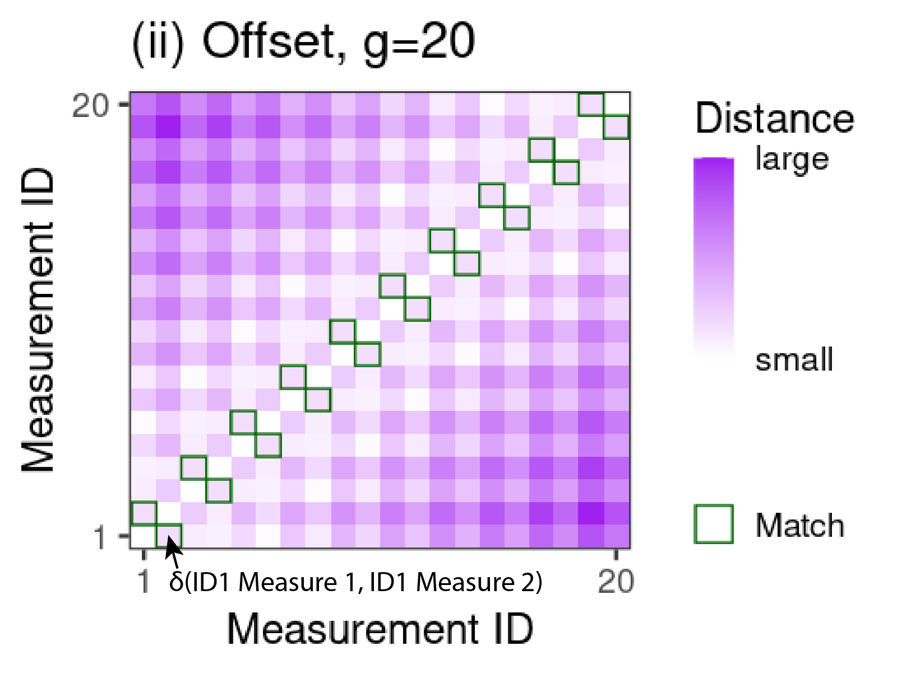 --- ### Discriminability Statistic: Step 3 - For each measurement, identify measurements from other individuals that are more similar than the measurement from the same individual (<font color="orange">orange boxes</font>) - let $\color{orange}f$ be the total number of <font color="orange">orange boxes = 84</font> 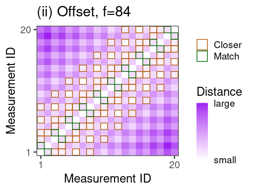 --- ### Discriminability Statistic - Discr = $1 - \frac{\color{orange}f}{N(N-1) - \color{green}g} = 1 - \frac{\color{orange}{84}}{20\cdot 19 - \color{green}{20}} \approx .77$ 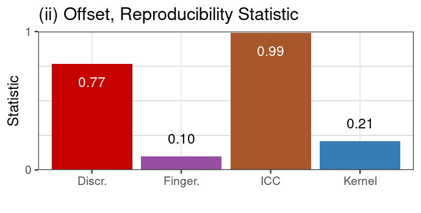 High discriminability: same-item measurements are more similar than across-item measurements --- ### Discriminability is Construct Valid 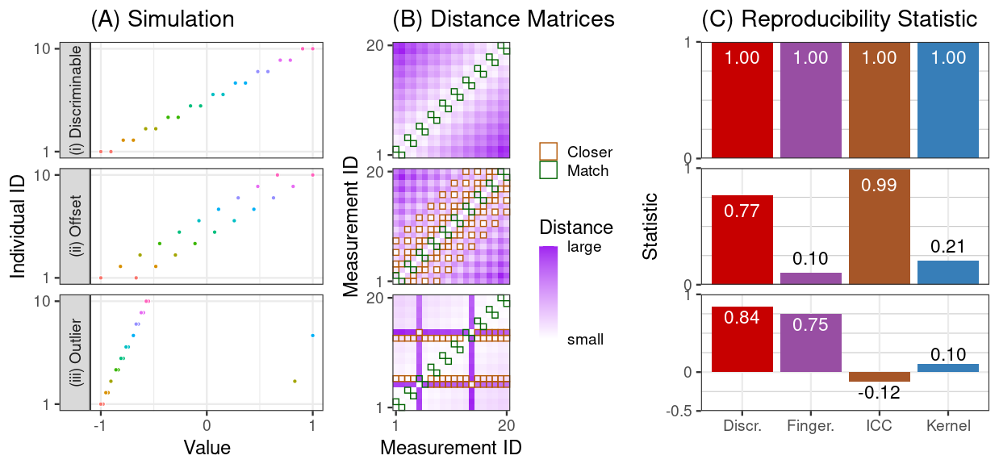 <!-- - under the given construct (what the simulation is supposed to show), discriminability provides a sensible statistic --> <!-- - other approaches do not --> --- name:results ### Outline - [Motivation](#defn) - [Quantifying Discriminability](#statistics) - Real Data - [Discussion](#disc) --- ### What data will we be using? - CoRR metadataset - $N>1,700$ individuals imaged across $26$ different datasets - anatomical MRI and fMRI scans for each - Individuals are measured at least twice --- ### Analysis Procedure Process each measurement using $192$ different pipelines 1. Brain alignment (ANTs/FSL) 2. Frequency filtering (Y/N) 3. Scrubbing (Y/N) 4. Global Signal Regression (Y/N) 5. Parcellation (4 options) 6. Rescaling connectomes (Raw, Log, Pass-to-Rank) $192 = 2 \times 2 \times 2 \times 2 \times 4 \times 3$ All options represent strategies experts consider useful --- ### Pipeline impacts discriminability <center>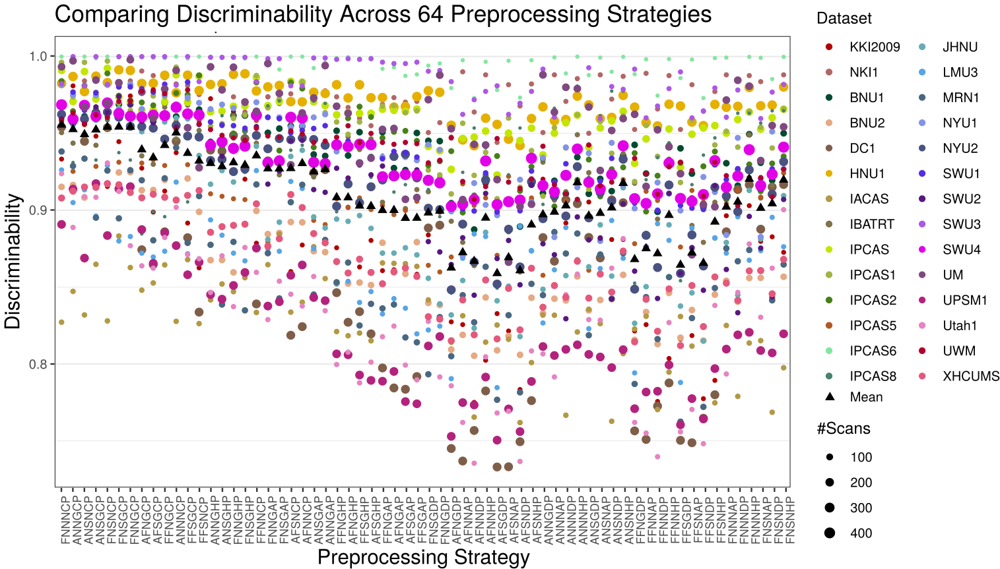</center> <!-- - Consequence: choosing how to pre-process your data matters --> --- ### Marginally most discriminabile options tend to be best global options <center>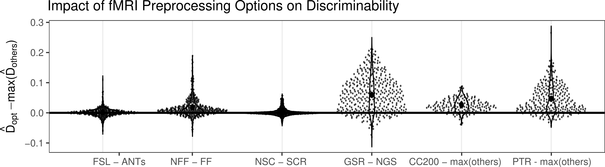</center> - Each point is the pairwise difference holding other options fixed (e.g., FNNGCP - ANNGCP) - Best pipeline marginally (FNNGCP) is second best pipeline overall, and not much worse (2-sample test, p=.14) than the best pipeline FNNNCP - We may not need to always try every pre-processing strategy every time --- ### Selection via Discriminability improves inference For each pre-processing strategy, for each dataset, compute: 1. Within-dataset Discr. 2. Demographic effects (sex and age) within the dataset via Distance Correlation (DCorr) 3. Within a single dataset, regress demographic effect on Discr. Question: does a higher discriminability tend to yield larger effects for known biological signals? --- ### Selection via Discriminability improves inference 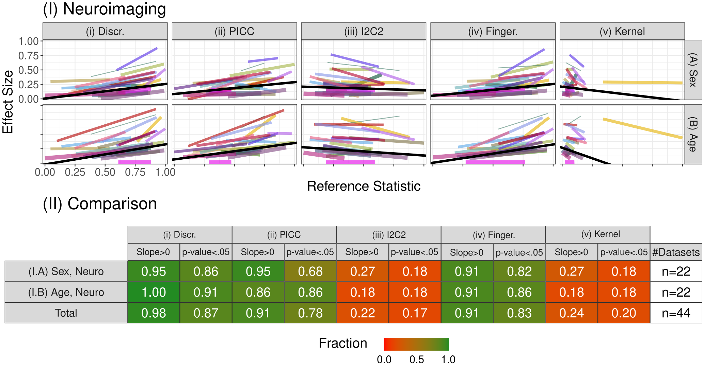 <!-- - Consequence: maximizing discriminability in general improves downstream inference --> --- name:disc ### Outline - [Problem Space](#prob) - [Defining and Quantifying Discriminability](#statistics) - [Real Data](#results) - Discussion --- ### Contributions 1. Discriminability quantifies the contributions of systematic and accidental deviations 3. Provide theoretical motivation for discriminability in connection with predictive accuracy 2. Formalize tests for assessing and comparing discriminabilities within and between collection strategies 4. Illustrate the value of discriminability for neuroscience and genomics (not discussed) data 5. Code implementations in [python](https://github.com/neurodata/hyppo) and [R](https://github.com/neurodata/r-mgc) <!-- --- ### Connections to Energy Statistics - energy statistics provide statistics that are functions of distances between measurements, like discriminability - both approaches make relatively few assumptions - discriminability 2-sample test is a comparison of K-sample tests in the energy statistics literature - energy statistics tend to perform well when we have more replicates (e.g., DISCO) --> <!-- --- --> <!-- ### Extending Discriminability - use of distances allows for trivial modification for non-Euclidean measurements - e.g., speech or text data may make sense with different distance functions - measurements that consist of multiple measurements themselves - if we only have one measurement that consists of many sub-measurements, can split the sub-measurements into multiple measurements - e.g., taking a single fMRI and splitting into two fMRI with $\frac{t}{2}$ timepoints each --> --- ### Acknowledgements <div class="small-container"> <img src="faces/jovo.png"/> <div class="centered">Josh Vogelstein</div> </div> <div class="small-container"> <img src="faces/shangsi.jpg"/> <div class="centered">Shangsi Wang</div> </div> <div class="small-container"> <div class="centered">Zhi Yang</div> </div> <div class="small-container"> <div class="centered">Zeyi Wang</div> </div> <div class="small-container"> <div class="centered">Ting Xu</div> </div> <div class="small-container"> <div class="centered">Cameron Craddock</div> </div> <div class="small-container"> <img src="faces/jayanta.jpg"/> <div class="centered">Jayanta Dey</div> </div> <div class="small-container"> <img src="faces/gkiar.jpg"/> <div class="centered">Greg Kiar</div> </div> <div class="small-container"> <div class="centered">William Gray-Roncal</div> </div> <div class="small-container"> <div class="centered">Carlo Colantuoni</div> </div> <div class="small-container"> <div class="centered">Christopher Douville</div> </div> <div class="small-container"> <div class="centered">Stephanie Noble</div> </div> <div class="small-container"> <img src="faces/cep.png"/> <div class="centered">Carey Priebe</div> </div> <div class="small-container"> <img src="faces/bcaffo.jpg"/> <div class="centered">Brian Caffo</div> </div> <div class="small-container"> <img src="faces/mm.jpg"/> <div class="centered">Michael Milham</div> </div> <div class="small-container"> <div class="centered">Xinian Zuo</div> </div> <img src="images/funding/nsf_fpo.png" STYLE="HEIGHT:95px;"/> <img src="images/funding/nih_fpo.png" STYLE="HEIGHT:95px;"/> <img src="images/funding/darpa_fpo.png" STYLE=" HEIGHT:95px;"/> <img src="images/funding/iarpa_fpo.jpg" STYLE="HEIGHT:95px;"/> <img src="images/funding/KAVLI.jpg" STYLE="HEIGHT:95px;"/> <img src="images/funding/schmidt.jpg" STYLE="HEIGHT:95px;"/> - [BioRxiv manuscript](https://www.biorxiv.org/content/10.1101/802629v6) - Code implementations in [python](https://github.com/neurodata/hyppo) and [R](https://github.com/neurodata/r-mgc) --- ### Extra Topics - [Theory](#theory) - [Other Reproducibility Statistics](#other) - [Limitations](#limitations) - [Extension: Discriminability Decomposition](#extension) --- name:theory ### Extra Topics - Theory - [Other Reproducibility Statistics](#other) - [Limitations](#limitations) - [Extension: Discriminability Decomposition](#extension) --- ### Population Discriminability - population discriminability $D$ is a .ye[property of the distribution] of measurements <!-- - A sequence of items $x_i^k$ from individuals $i=1,..., N$ measured at time $k=1,..., s$ --> $D = \mathbb P(\delta(x_i^k, x_i^{k'}) < \delta(x_i^k, x_j^{k''}))$ - Probability of within-individual measurements being more similar than between-individual measurements --- ### Discriminability: unbiased and consistent - Sample Discr. $= $fraction of times $\delta(x_i^k, x_i^{k'}) < \delta(x_i^k, x_j^{k''})$ - $i, j = 1, ..., n$ and $i \neq j$ for $n$ individuals - $k, k', k'' = 1, ..., s$ and $k \neq k'$ for $s$ sessions <!-- - Probability that distances from measurements of the same individual are smaller than distances from measurements of different individuals --> - Sample Discr. is an .ye[unbiased estimator] of $D$ - Sample Discr. converges to $D$ (.ye[asymptotically consistent] in $n$) --- ### Connecting Discriminability to Downstream Inference <!-- - Fundamental question: does discriminability .ye[matter] for inference? --> <!-- ##### Assumptions --> <!-- Data follows Gaussian mixture model plus additive Gaussian noise --> #### Assumption: Multivariate Additive Noise Setting - $y_i \sim Bern(\pi)\;i.i.d.$, - $\theta_i \sim \mathcal N(\mu(y_i), \Sigma_t)\;ind.$, - (the individual means have a center which depends on the class) -- - $\epsilon_{i}^k \sim \mathcal N(c, \Sigma_e)\;i.i.d.$ and $ind.$ of $\theta_i$, - $x_{i}^k = \theta_i + \epsilon_i^k$. - (the measurements $x_i^k$ are normally dispersed about the individual means) --- ### Connecting Discriminability to Downstream Inference Suppose $(x_i^k, y_i)$ follow the Multivar. Additive Noise Setting, where $i=1, ..., n$ and $k=1,...,s$. #### Theorem 1 There exists an increasing function of $D$, $f(D)$, which provides a lower bound on the predictive accuracy of a subsequent classification task - $f(D) \leq A$, where $A$ is the Bayes Accuracy of the classification task #### Consequence - $D \uparrow \Rightarrow f(D) \uparrow$ --- #### Corollary 2 A strategy with a higher $D$ provably provides a higher bound on predictive accuracy than a strategy with a lower $D$ #### Consequence Suppose $D_1 < D_2$, then since $f$ is increasing, $f(D_1) < f(D_2)$ #### Implication We should use strategies with higher discriminability, as the worst-case for subsequent inference is better than a generic strategy with a lower discriminability --- ### Simulation Setup <!-- - Construct $3$ simple simulations where the data are describable in Gaussian (or non-Gaussian) framework --> <!-- - level of "noise" in the simulation is varied --> <!-- <center>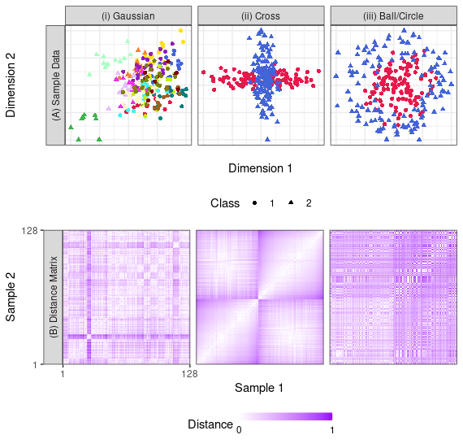</center> -->  --- ### Discriminability and Accuracy  <!-- <center>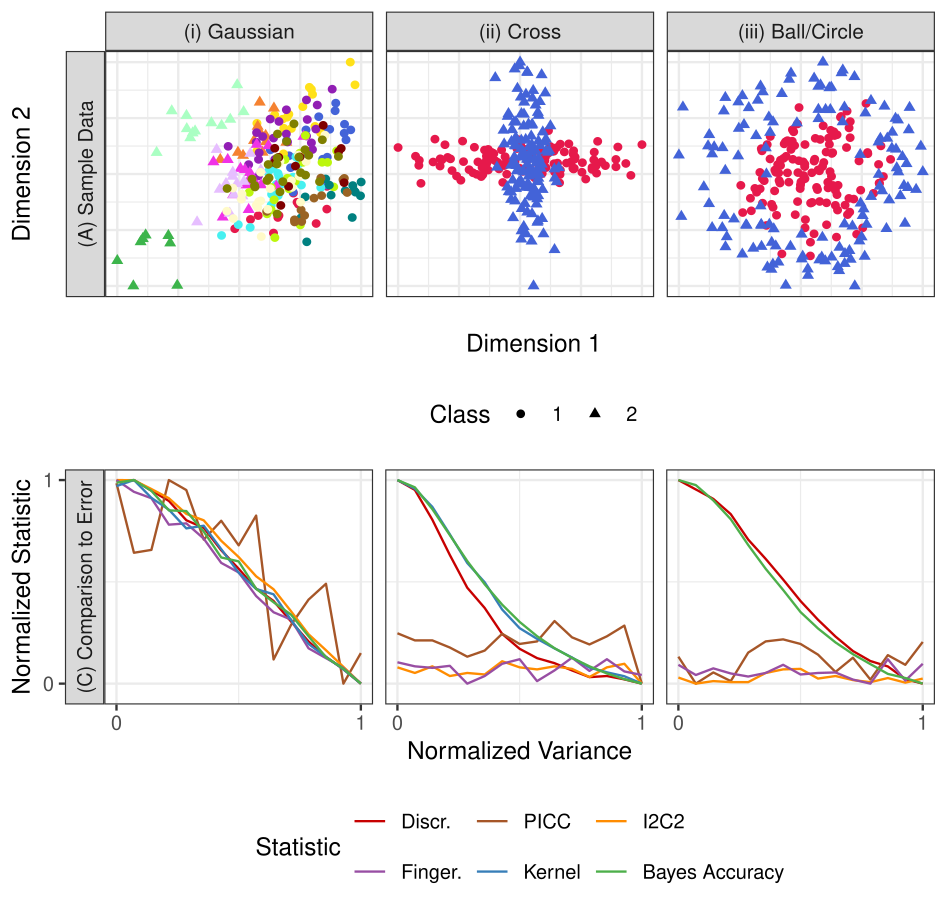</center> --> Discr. decreases proportionally with accuracy --- ### Are data discriminable? <!-- - Fundamental question: are the data discriminable at all? -->  --- ### Is one dataset more discriminable than another?  --- name:other ### Extra Topics - [Theory](#theory) - Other Reproducibility Statistics - [Limitations](#limitations) - [Extension: Discriminability Decomposition](#extension) --- #### Intraclass Correlation Coefficient (ICC) - can be thought of as looking at the "relative size" of the within-group vs between-group variance - $y_i^k = \mu + \mu_i + \epsilon_i^k$ - let $\mu_i \sim \mathcal N(0, \sigma_b^2)$, and $\epsilon_i^k \sim \mathcal N(0, \sigma_e^2)$ - $ICC = \frac{\sigma_b^2}{\sigma_e^2 + \sigma_b^2}$ - $ICC \uparrow \Rightarrow $ between-group variance exceeds within-group variance proportionally --- #### Intraclass Image Correlation Coefficient (I2C2) - simplest "multivariate extension" of ICC - $y_i^k = \mu + \mu_i + \epsilon_i^k$ - let $\mu \sim \mathcal N(0, \Sigma_b)$ and $\epsilon_i^k \sim \mathcal N(0, \Sigma_e)$ - $I2C2 = \frac{tr(\Sigma_b)}{tr(\Sigma_b) + tr(\Sigma_e)}$ - "ratio of total variability accounted for between groups" --- #### Fingerprinting Index (Finger.) - "greedy discriminability" - $Finger. = \mathbb P(\delta(x_i^1, x_i^2) < \delta(x_i^1, x_j^2) \;\forall\; i \neq j)$ - $\forall\; i \neq j$: this property must occur for every measurement in the second session --- #### Distance Components (Kernel) - "non-parametric ANOVA" - "pseudo F" statistic: positive support --- name:limitations ### Extra Topics - [Theory](#theory) - [Other Reproducibility Statistics](#other) - Limitations - [Extension: Discriminability Decomposition](#extension) --- ### Limitations - experimental design is not "one-size-fits-all" <!-- - future scientific questions will still need to consider the question of interest --> <!-- - e.g., an analysis of task fMRI may not want to use a pre-processing pipeline with global signal regression, but for resting-state fMRI, this may not be an issue --> - Discriminability is not sufficient for practical utility - categorical covariates are meaningful but not discriminable - fingerprints are discriminable but not typically biological useful - These statistics are not immune to sample characteristics - confounds such as age may inflate discriminability --- name:extension ### Extra Topics - [Theory](#theory) - [Other Reproducibility Statistics](#other) - [Limitations](#limitations) - Extension: Discriminability Decomposition --- ### Extension: Discriminability Decomposition #### Setting $(x_{i}^k, y_i)$ $i=1, ..., n$, $k=1,...,s$, $y_i \in$ \{$1, ..., Y$\} - associated with each individual, I have some other categorical covariate of interest, $y_i$, taking one of $Y$ possible values - Can the population discriminability be decomposed as a sum of the within-group discriminabilities? -- - Short answer: No -- - Long answer: yes, but with some added terms --- ### Within-Group Discriminability - Let $D(y) = \mathbb P(\delta(x_i^k, x_i^{k'}) < \delta(x_i^k, x_j^{k''}) | y_i, y_j = y)$ - $D(y)$ is the group discriminability for group $y$ - "How discriminable are samples from group $y$?" -- - Note that $W = \mathbb P(\delta(x_i^k, x_i^{k'}) < \delta(x_i^k, x_j^{k''}) | y_i= y_j)$= $\frac{\mathbb P(\delta(x_i^k, x_i^{k'}) < \delta(x_i^k, x_j^{k''}) , y_i = y_j)}{\mathbb P(y_i = y_j)}$ by Bayes' Rule -- - Let $w(y) = \mathbb P(y_i, y_j = y)$ denote the within-group weights - With $\omega = \sum_y w(y)$, then: $W = \frac{1}{\omega}\sum_y w(y) D(y)$ is the within-group Discriminability --- ### Between-Group Discriminability - Let $D(y, y') = P(\delta(x_i^k, x_i^{k'}) < \delta(x_i^k, x_j^{k''}) | y_i = y, y_j = y')$ - $D(y, y')$ is the between-group discriminability for groups $y$ and $y'$ - "How discriminable are samples from group $y$ vs group $y'$, and vice versa?" -- - Note that $B = \mathbb P(\delta(x_i^k, x_i^{k'}) < \delta(x_i^k, x_j^{k''}) | y_i\neq y_j)$= $\frac{\mathbb P(\delta(x_i^k, x_i^{k'}) < \delta(x_i^k, x_j^{k''}) , y_i \neq y_j)}{\mathbb P(y_i \neq y_j)}$ by Bayes' Rule -- - Let $b(y, y') = \mathbb P(y_i = y, y_j = y')$ denote the between group weights - With $\beta = \sum_{y\neq y'} w(y,y')$, then: $B = \frac{1}{\beta}\sum_{y \neq y'}b(y,y')D(y,y')$ is the between-group Discriminability --- ### Discriminability Decomposition - $D = \omega W + \beta B$ - Population discriminability is a weighted sum of within and between-group Discriminabilities - Can look at how the within, or between, group discriminabilities compare - $\frac{W}{D}$ ratio of within-group Discriminability and pop. discriminability - $\frac{B}{D}$ ratio of between-group Discriminability and pop. discriminabillity - are certain groups more discriminable than others? - are certain between-group discriminabilities greater than others?